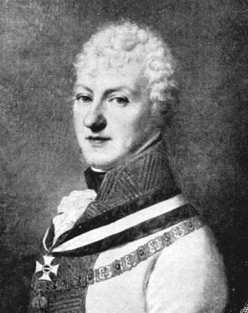
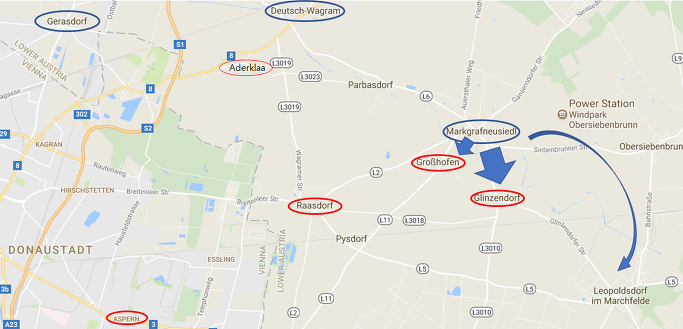
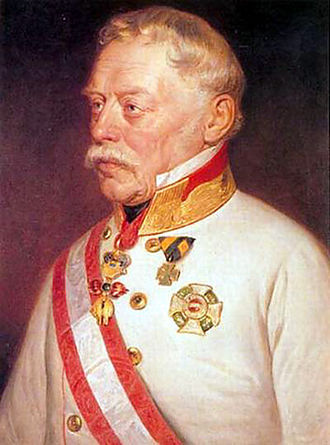

바그람 전투 (제6편) - 라데츠키의 분전
게시: 2017-07-16T22:27:23+09:00
오스트리아군의 좌익을 맡고 있던 로젠베르크(Franz Seraph von Orsini-Rosenberg) 대공의 제4 군단의 역할은 어디까지나 기만을 위한 미끼였습니다. 카알 대공의 주공은 어디까지나 우익, 즉 게라스도르프(Gerasdorf) 쪽의 클레나우의 제6 군단과 콜로브라트(Kollowrat)의 제3 군단이었지요. 그러나 미끼도 너무 작으면 큰 고기를 낚을 수 없는 법이었으므로 로젠베르크의 군단도 총 1만8천의 꽤 큰 것이었습니다. 거기에다 저녁 무렵에 만신창이가 되어 합류한 노르드만(Nordmann)의 전위대 6천, 그리고 노스티즈(Nostitz)의 기병대 3천이 합류해 있었으므로 총 2만7천의 강력한 군세였습니다.

(로젠베르크는 당시 49세로서, 작위는 Reichsfürst 였습니다. 왕보다는 밑, 공작보다는 위인 대공 정도로 번역하는 것이 맞을 듯 합니다.)
로젠베르크는 이들을 총 3개부대로 편성하여 고지 아래의 프랑스군을 들이치기로 했습니다. 1개 부대는 6개 대대로 작게 편성되어 프랑스군 수중에 있던 그로스호펜(Grosshofen) 마을을 공격하기로 했고, 무려 16개 대대로 강력하게 편성된 다른 1개 부대는 글린첸도르프(Glinzendorf)를 들이치기로 했습니다. 글린첸도르프로 향하는 부대에는 나중에 요한 스트라우스의 '라데츠키 행진곡'으로 음악사에 영원한 이름을 남기게 되는 라데츠키 백작(Joseph Radetzky von Radetz)도 포함되어 있었습니다. 나머지 1개 부대는 모두 기병대로 되어 있었고 이들은 프랑스군의 우측으로 멀찍이 우회하여 프랑스군의 후방이라고 할 수 있는 레오폴즈도르프(Leopoldsdorf)를 습격하기로 했습니다. 나름 굉장히 머리를 쓴 작전이었고, 전날 헛된 공격으로 지치고 사기가 떨어진 프랑스군에게 대혼란을 일으킬 수 있는 심각한 위협이 될 수 있었습니다. 또한 로젠베르크의 공세에는 무려 60문의 대포가 딸려 있었으므로, 새벽 하늘에 엄청난 포성을 울려 나폴레옹의 시선을 잡아 끌게 되어 있었습니다.

(붉은색 원은 프랑스군이 주둔한 지역이고, 푸른색 원은 오스트리아군 주요 거점입니다. 푸른색 화살표가 로젠베르크의 공세 방향입니다.)
그러나 로젠베르크에게는 재수가 없게도, 그의 앞에 있던 부대는 바로 프랑스군 최고의 지장이라고 할 수 있던 다부(Davout)였습니다. 다부의 제3 군단은 무려 3만2천의 보병과 6천2백의 기병, 그리고 무려 120문의 대포를 갖추고 있어서 프랑스군 최강의 공격력을 갖추고 있었고, 로젠베르크의 공세를 충분히 막아낼 수 있었습니다. 기습이라도 성공했으면 어땠을지 모르겠으나, 다부는 전날의 야간 공격이 아무런 의미가 없다고 보고 나폴레옹의 의도와는 달리 일찌감치 공격을 걷어들인 바 있었지요. 덕분에 프랑스군은 별로 지치지도 않았고, 새벽에 오히려 오스트리아군을 기습 공격을 하겠다고 만반의 준비를 갖춘 상태였습니다. 게다가 로젠베르크는 공세에 나서면서 '절대 엄숙'을 지시했으나, 이 군단에는 반쯤은 민간인이라고 할 수 있는 국민방위군(Landwehr) 부대가 상당수 포함되어 있었고, 그래서인지 상당히 많은 소음을 내며 행군을 했습니다.
덕분에 프랑스군은 기습을 당해 무척 놀라긴 했으나 무너지지는 않았습니다. 새벽 5시 경, 라데츠키 장군이 지휘하는 오스트리아군 선봉대가 그로스호펜을 습격하여 프랑스군을 밀어냈고, 이어서 글린첸도르프에도 오스트리군의 강력한 공격이 시작되었습니다. 불과 1개 연대의 프랑스군이 주둔하고 있던 그로스호펜은 곧장 오스트리아군 수중에 넘어갔으나, 다부는 당황하지 않고 곧 반격을 시작했습니다. 그로스호펜에서 밀려난 프랑스군의 퓌토(Puthod) 장군이 그로스호펜을 탈환하기 위해 정면 공격을 하는 동안 구댕(Gudin) 장군의 강력한 사단이 그 측면을 들이쳤습니다. 프리앙 장군과 모랑 장군의 2개 사단이 주둔하고있던 글린첸도르프 마을은 오스트리아군의 공격에 맞서 잘 버텨주었고, 그루시(Grouchy) 장군과 몽브렁(Montbrun) 장군의 프랑스군 기병대는 측면을 돌아 레오폴즈도르프를 노리던 오스트리아군의 기병대를 오히려 다시 우회하기 위해 움직였습니다.
이렇게 로젠베르크와 다부가 새벽에 혈투를 벌이며 낸 포성과 총성은 새벽 하늘을 가로질러 라스도르프(Raasdorf)에서 이른 아침식사 중이던 나폴레옹의 귀에도 똑똑히 들려왔습니다. 그는 화들짝 놀랐습니다. 다부가 자신의 지시를 어기고 먼저 공격을 시작했을리도 없으니, 그쪽에서 포성이 들린다는 것은 그가 두려워하던 것이 도착했다는 것을 뜻하는 것이었습니다. 바로 요한 대공의 오스트리아 내부군이었지요. 당시 프레스부르크에 웅크리고 있던 요한 대공에게는 고작 1만3천 정도의 병력 밖에 없었습니다. 그러나 그와 대치하고 있던 외젠이 좀 부풀려 보고를 했는지, 나폴레옹은 요한 대공의 군세를 약 3만 정도로 보고 있었습니다. 아슬아슬하게 병력의 우위를 지키고 있는 마당에 적에게 3만이 더 가세한다는 것은 악몽에 가까운 일이었습니다. 그는 당장 예비 기병대로부터 낭수티(Nansouty)와 아리기(Arrighi) 장군의 중장 기병대를 다부 쪽으로 파견했고, 이어서 황실 근위대까지 그쪽으로 투입했습니다. 이런 위기 상황에 태연하게 아침 식사를 마저 끝낼 나폴레옹이 아니었습니다. 낭수티 장군의 기병대 중에 가장 먼저 현장에 도착한 기마 포병대가 로젠베르크 군단에게 첫 포탄을 발사할 때 즈음에는 이미 나폴레옹도 현장에 도착하여 다부와 함께 반격 상황을 직접 눈으로 확인하고 있었습니다.
상황이 이렇게 되자 당황한 것은 오히려 기습을 해온 오스트리아군 측이었습니다. 작전 상황을 면밀히 보고 있던 카알 대공은 어차피 프랑스군의 시선을 동쪽으로 돌리게 하는 것이 목적이었던 이쪽 전선에서 더 얻을 것이 없다고 보고는 로젠베르크에게 후퇴를 명했습니다. 말이 후퇴이지 한창 열을 올리며 싸우고 있는 적으로부터 등을 보이고 후퇴하는 것은 쉽지 않은 일이었습니다. 당시 전투에서 가장 많은 사상자와 포로가 발생하는 순간이 바로 이렇게 어느 한쪽이 등을 보이고 도망치는 순간이었거든요. 이 때 병력 통제가 안 된다면 큰 피해를 입을 수 밖에 없었고, 후퇴를 기술적으로 잘 해내는 것은 뛰어난 지휘관과 잘 훈련되고 기강이 잡힌 병사들만 해낼 수 있었습니다. 그런데 오스트리아군은 이것을 해냈습니다. 순식간에 전위대에서 후위대로 임무가 바뀐 라데츠키 장군의 부대는 로젠베르크의 제4 군단이 원래 출발선이었던 마르크그라프노이지들(Markgrafneusiedl) 마을로 퇴각할 때까지 추격하는 프랑스군을 잘 억눌렀고, 결국 아침 6시가 되어 후퇴가 완료될 때까지 오스트리아군의 피해는 1천1백명 정도로 심하지 않은 편이었습니다.

(말년의 라데츠키입니다. 그는 원래 보헤미아, 즉 체코의 귀족이었습니다. 요한 스트라우스가 라데츠키 행진곡을 그의 이름으로 헌정한 것은 그가 이탈리아 독립 전쟁 당시 1848년 쿠스토자(Custoza) 전투에서 이탈리아 독립군을 격파한 공로 때문이었습니다.)
나폴레옹으로서도 나쁘지 않은 결과였습니다. 자신이 두려워했던 것, 즉 요한 대공의 군대가 도착한 것은 아니라는 것을 확인한 것입니다. 오스트리아군이 맥없이 후퇴하는 것을 보면서 그가 걱정한 것은 그가 의도했던 기습이 이 새벽의 전투로 인해 불가능해졌다는 것이었습니다. 그는 그래도 다부의 공격이 그의 주공이 되어야 한다고 생각했고, 잃어보린 기습 효과를 어느 정도 벌충하기 위해 다부에게 일부 병력을 더 동쪽으로 우회시켜 적의 후방으로부터 마르크그라프노이지들을 공격하도록 지시했습니다. 덕분에 다부의 공격은 더 지체될 수 밖에 없었습니다.
나폴레옹이 놀란 마음을 쓸어내리며 다부에게 이렇게 감놔라 배놔라 참견을 하는 동안, 나폴레옹의 가슴을 정말로 철렁하게 만드는 사건이 전선 중앙부 아더클라(Aderklaa)에서 벌어지고 있었습니다.
Source : The Reign of Napoleon Bonaparte by Robert Asprey
With Napoleon's Guns by Jean-Nicolas-Auguste Noel
http://www.historyofwar.org/articles/battles_wagram.html
https://en.wikipedia.org/wiki/Battle_of_Wagram